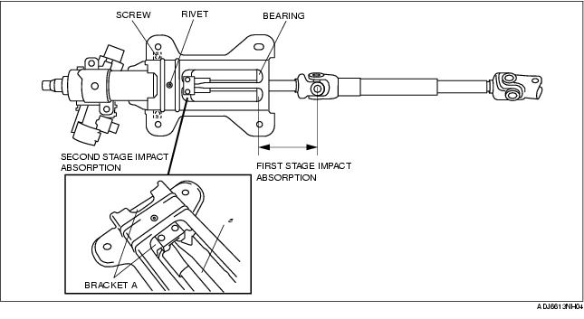

Energy absorbing system construction and operation
• At the moment of a collision, the rearward collapse of the steering gear (first stage impact) transmits the impact energy from the front, causing the energy absorbing shaft to slide along its internal bearing and compress, thereby absorbing the impact energy.
• Then, as the steering wheel contacts the body of the driver (second stage impact), the column bracket screws come off and the rivet is sheared off, causing the inside (bracket A) of the divided bracket to move as a single unit along part B towards the gear. The drag created as bracket A slides along the portion of part B that grows wider allows the impact energy to be absorbed.
